En la parte trasera se puede apreciar un alerón fijo caracteristico del TT. Y las luces traseras con tecnología OLED.
HISTORIA
El TT Coupe nace como consecuencia de la imposibilidad de producir en cadena el Audi Quattro Spyder, debido a sus costes desorbitados de la producción. Y del deseo de realizar un deportivo nacio el Audi TT Coupe. Un automóvil deportivo, producido por el fabricante alemán desde el año 1998.
Existen hasta la fecha tres generaciones del TT, todas ellas con configuración de 2+2 plazas, con motor delantero transversal y disponibles con carrocerías coupé y cabriolé de dos puertas y con tracción delantera o a las cuatro ruedas.
El TT fue mostrado por primera vez como un prototipo en el Salón del Automóvil de Fráncfort en 1995. El diseño es acreditado a J Mays y Freeman Thomas. Martin Smith contribuyo con el diseño interior. El nombre TT no indica twin turbo , sino que es una referencia a la Tourist Trophy.
A día de hoy existen tres generaciones. La primera va desde 1998 - 2006, la segunda de 2007 - 2014 y la tercera desde 2014 a la actualidad. A continuación verás las tres generaciones del Audi TT Coupe.
1ª Generación ( 1998 - 2006 )
- 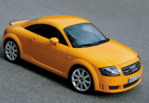
- 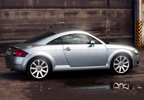
- 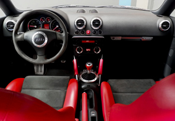
- 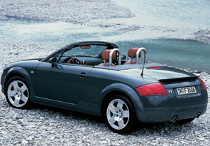
El modelo de producción (designación interna Typ 8N) fue lanzado con carrocería cupé en septiembre de 1998, seguido por el descapotable en agosto de 1999, basado en la plataforma PQ34, compartida por el Audi A3 Mk1, el Volkswagen Golf IV, el Seat León Mk1 y el Skoda Octavia Mk1 . Las diferencias con el prototipo son los paragolpes y la adición de ventanas en los cuartos traseros detrás de las puertas.
- Motor 1.8 CC
- 150 CV (110 kW) - Tracción delantera
- 163 CV (120 kW) - Tracción delantera
- 180 CV (132 kW) - Tracción delantera / Quattro
- 190 CV (140 kW) - Tracción delentera / Quattro
- 224 CV (165 kW) - Tracción Quattro
- 240 CV (176 kW) - Tracción Quattro
- Motor 3.2 CC
- 250 CV (184 KW) - Tracción Quattro
2ª Generación ( 2007 - 2014 )
- 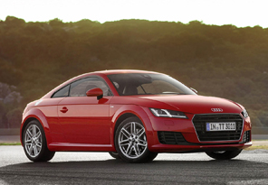
- 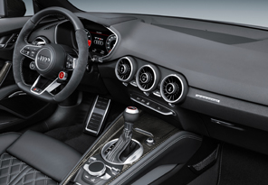
- 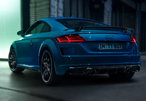
- 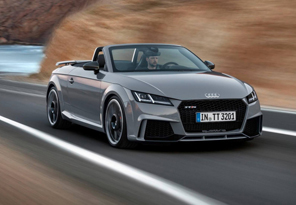
La segunda generación del TT se designó Typ 8J, el 6 de abril de 2006. Presento un diseño agresivo y dinámico, con una carrocería mucho más angulosa huyendo del minimalismo.
Está construido de aluminio en el frente y acero atrás para mejorar su balance, y está disponible con tracción delantera o quattro. Tiene un cambio manual de seis velocidades y la transmisión S-Tronic de doble embrague. En todas las versiones se podía optar entre una configuración Coupe o Cabrio.
- Motores gasolina TFSI
- 1.8 CC con 160 CV (118 kW) - Tracción delantera
- 2.0 CC con 200 CV (147 KW), 211 CV (155 KW) y TTS de 272 CV (200 KW) - Tracción delantera / Quattro
- (TT RS) 2.5 CC con 340 CV (250 KW) y 360 CV (260 KW) - Tracción Quattro
- 3.2 CC con 250 CV (184 KW) - Tracción Quattro
- Motor diesel
- 2.0 CC con 170 CV (125 KW) - Tracción Quattro
3ª Generación ( 2014 - actualidad )
- 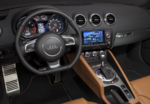
- 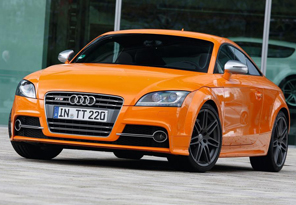
- 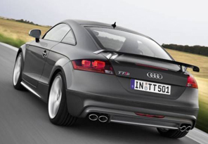
- 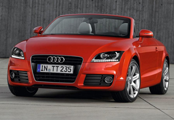
Fue presentada en el Salón del automóvil de Ginebra del año 2014 en sus versiones normal y TTS. Su diseño se conservan las líneas redondeadas pero se acentúan las líneas rectas en los detalles de diseño. Todas las versiones se presentaban en versión coupe y cabrio.
- Motores gasolina TFSI
- 1.8 CC con 180 CV (132 kW) - Tracción delantera
- 2.0 CC con 230 CV (169 KW) - Tracción delantera / Quattro
- (TTS) de 310 CV (228 KW) - Tracción Quattro
- (TT RS) 2.5 CC con 400 CV (294 KW) - Tracción Quattro
- Motor diesel
- 2.0 CC con 184 CV (135 KW) - Tracción delantera / Quattro
GALERIA
- 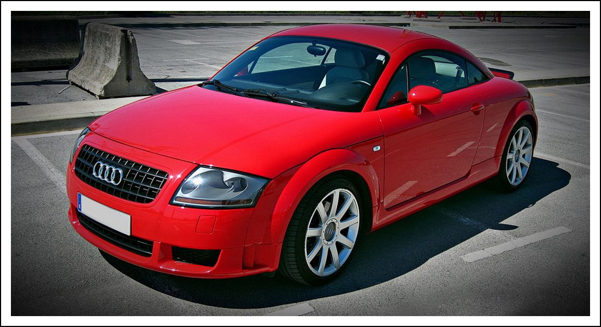
- 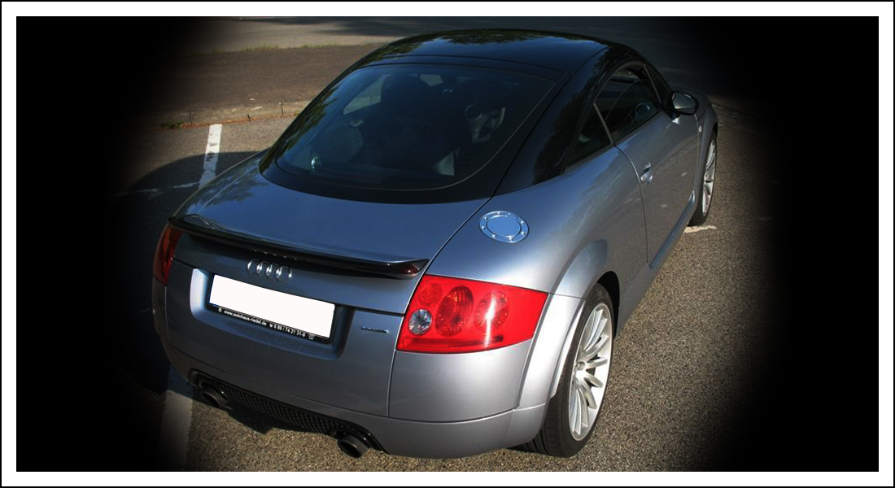
- 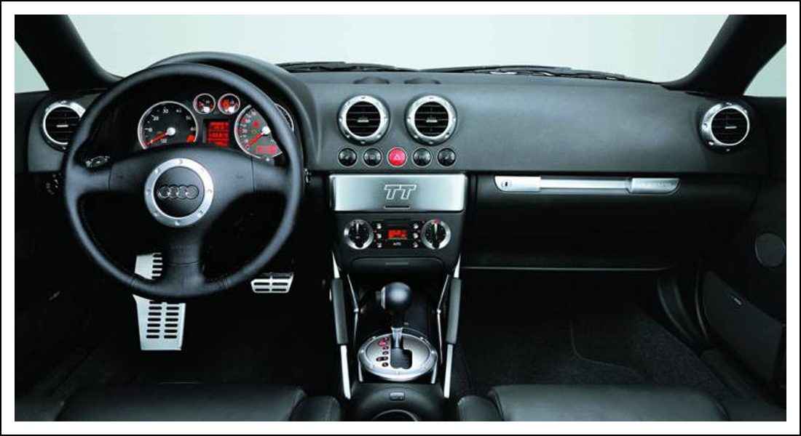
- 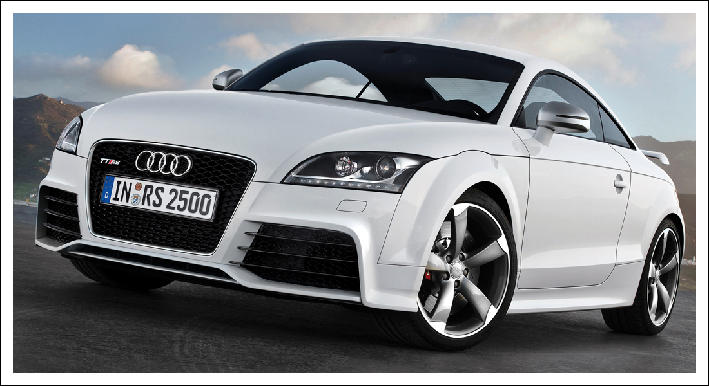
- 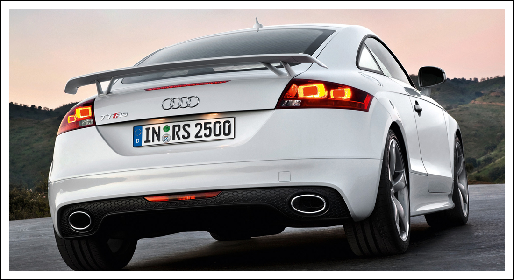
- 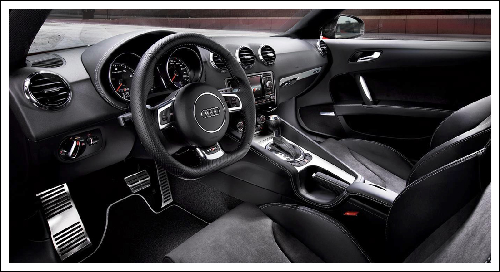
- 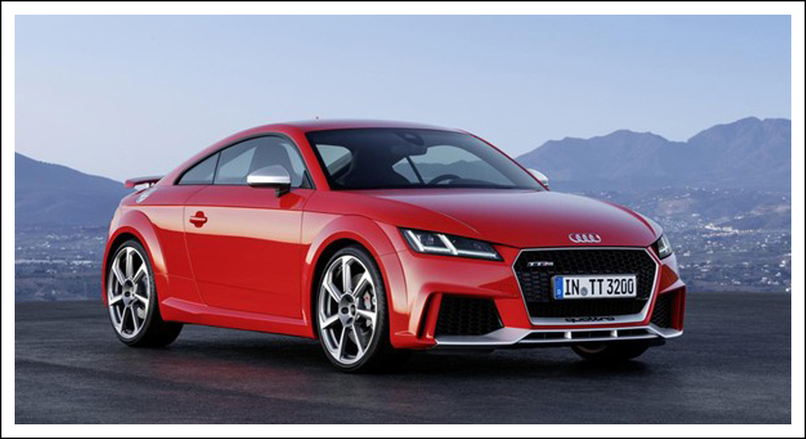
- 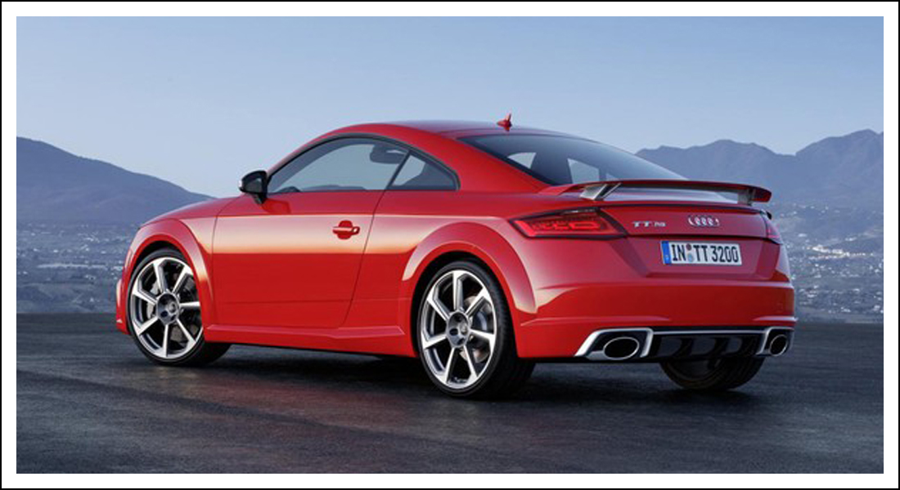
- 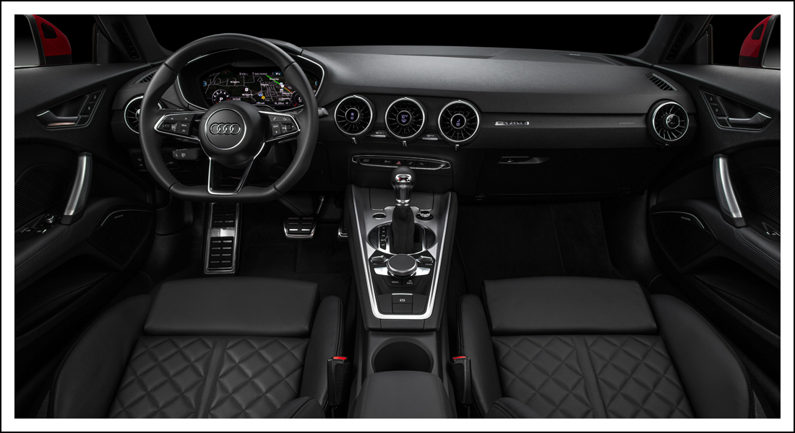
- 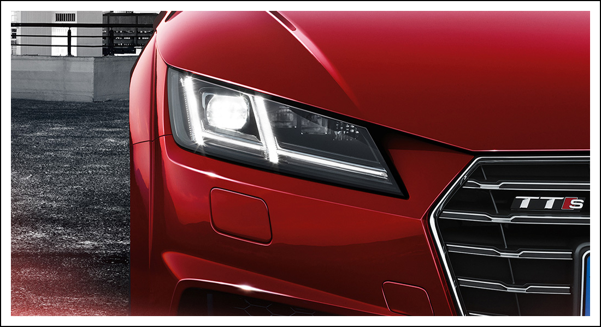
- 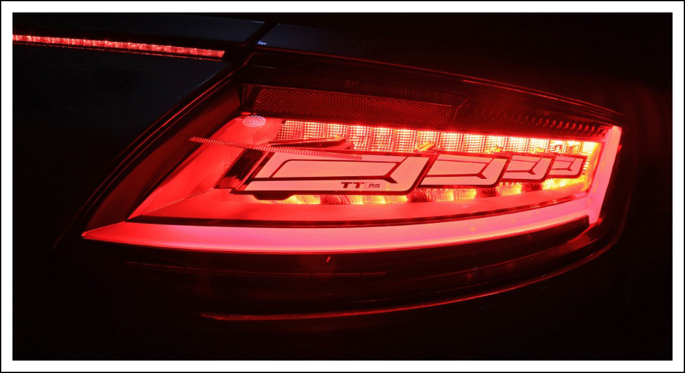
- 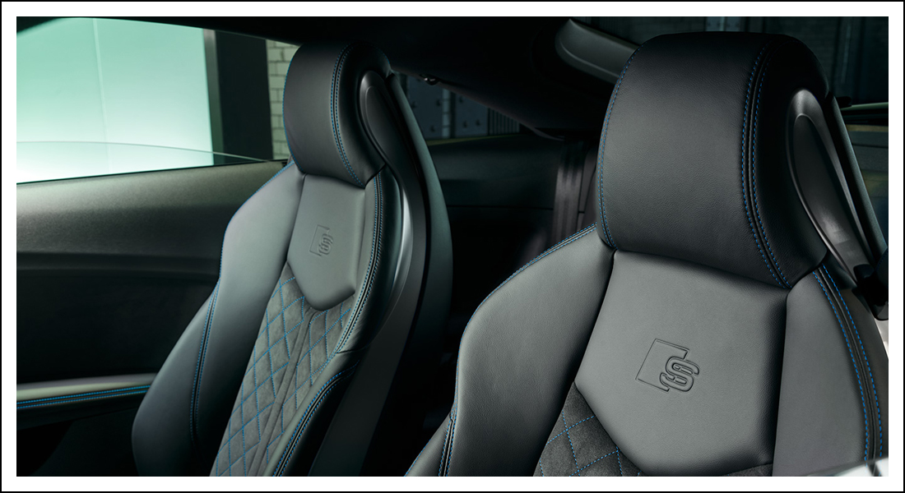
CARACTERISTICAS
El nuevo Audi TT Coupé está disponible con cuatro motores TFSI de diferente potencia, desde 197 CV (145KW) hasta 245CV (180KW) y cajas de cambios de 6 velocidades o S tronic. Además, uno de estos motores está disponible con tracción quattro permanente. El equipamiento de serie incluye Audi drive select, con varios modos de conducción.
Posee un maletero con una capacidad de 305 litros.
Exterior
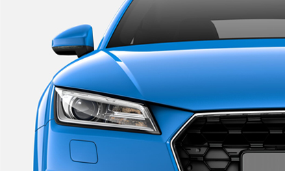
Puedes admirar su frontal con la parrilla Singleframe tridimensional con faros Audi Matrix LED, para que te olvides de cambiar de luces de carretera a las de cruce cuando conduces por la noche. De ello se encarga una unidad de control. Además posee unas grandes tomas de aire laterales.
En su parte trasera tiene los tubos de escape en posición central y simétrica. En el paquete S line competition se incluye un alerón trasero y las pinzas de freno pintadas de rojo.
Tienes la opción de elegir entre una gran gama de llantas desde 17’’ hasta 20’’
Interior
Siente como si estuvieras en el sofá de tu casa en los asientos deportivos con reposacabezas integrados, o si eliges el paquete S line competition unos asientos deportivos de cuero con pespuntes de rombos, costuras en contraste y grabado en relieve del emblema S, con regulación lumbar eléctrica.
Manten todo bajo control a través del panel táctil integrado y su pantalla a color de 12,3 pulgadas. Podrás elegir entre dos modos: el modo clásico, donde se visualiza el velocímetro y el cuentarrevoluciones; o el modo infotainment, donde aumenta el tamaño de contenidos y aparece el mapa de navegación. La pantalla deportiva opcional te ofrece información sobre la potencia, el par motor y las fuerzas g.
¿Quieres disfrutar de la música? Pues tenemos un sistema de sonido Bang & Olufsen, con amplificador de 680 vatios de potencia, doce altavoces y las dos cajas de graves que crean un ambiente acústico impresionante.
¿Quieres disfrutar de la potencia y velocidad? TT RS es tu coche. Con un frontal agresivo invita a ponerte al volante de esta maquina y dominar sus 400 CV.
Motor de 2.480 cc con cinco cilindros en línea turbo y 400 CV (480 Nm de par ).
Audi Virtual Cockpit con una pantalla de 12,3 pulgadas en la que se pueden visualizar dos modos: el modo clásico o el modo infotainment.